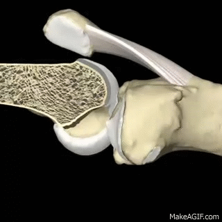
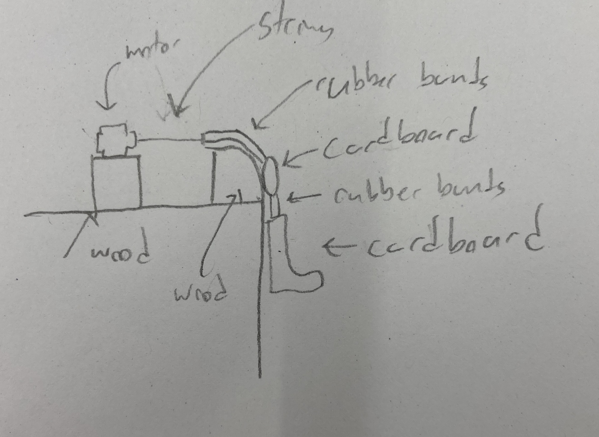
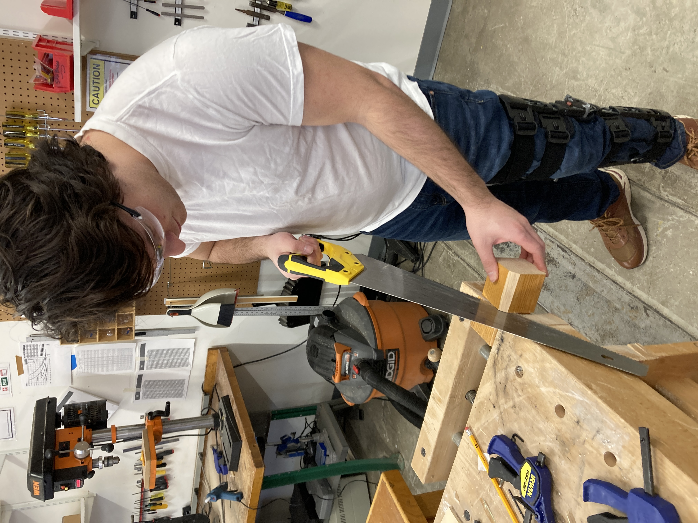
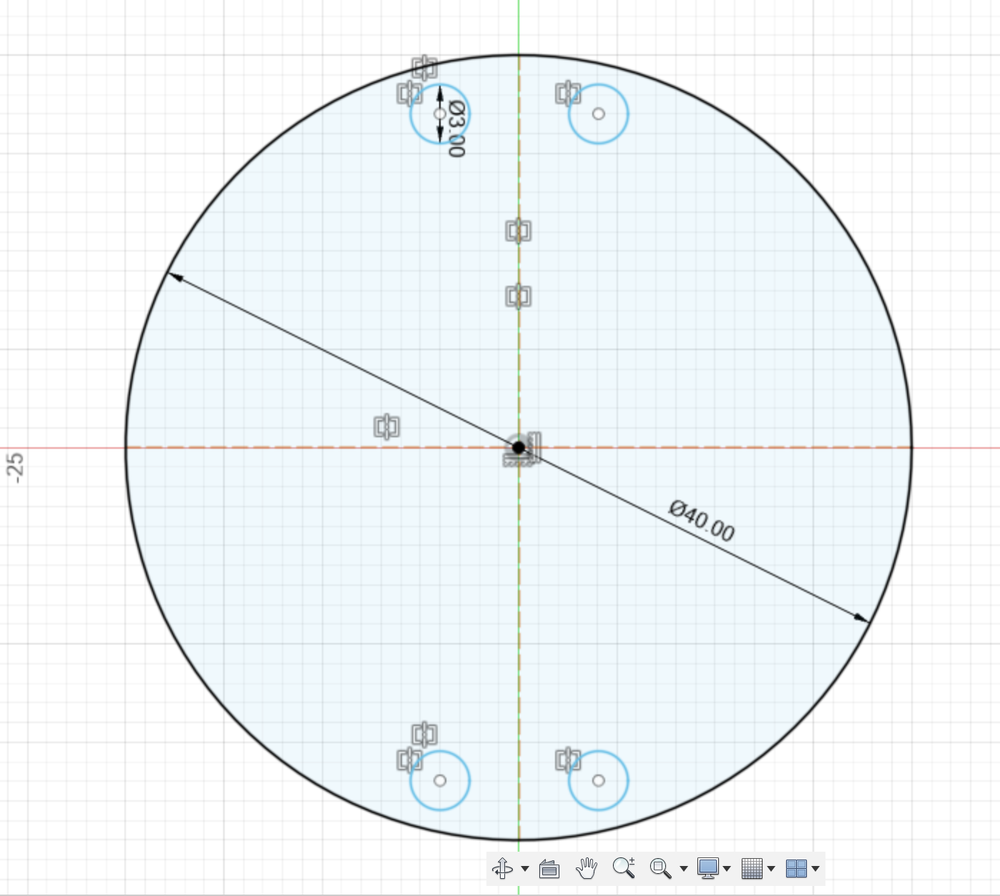
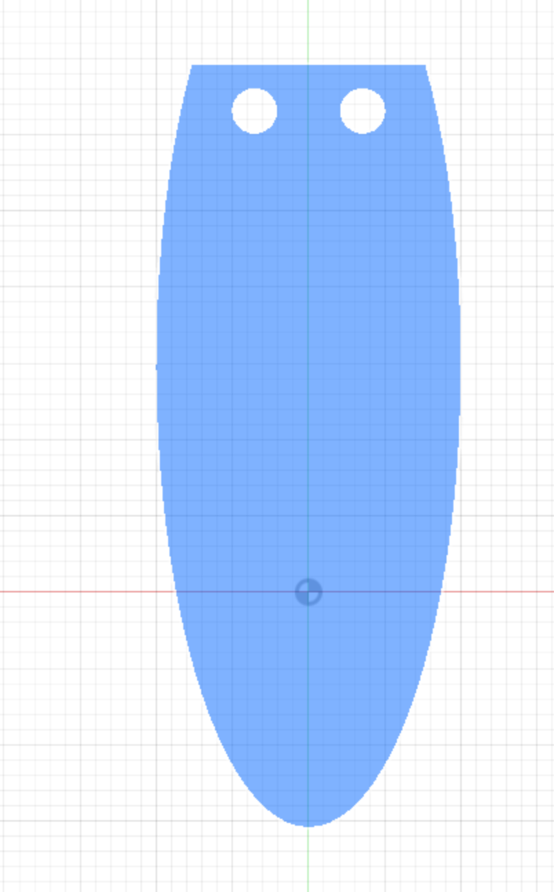
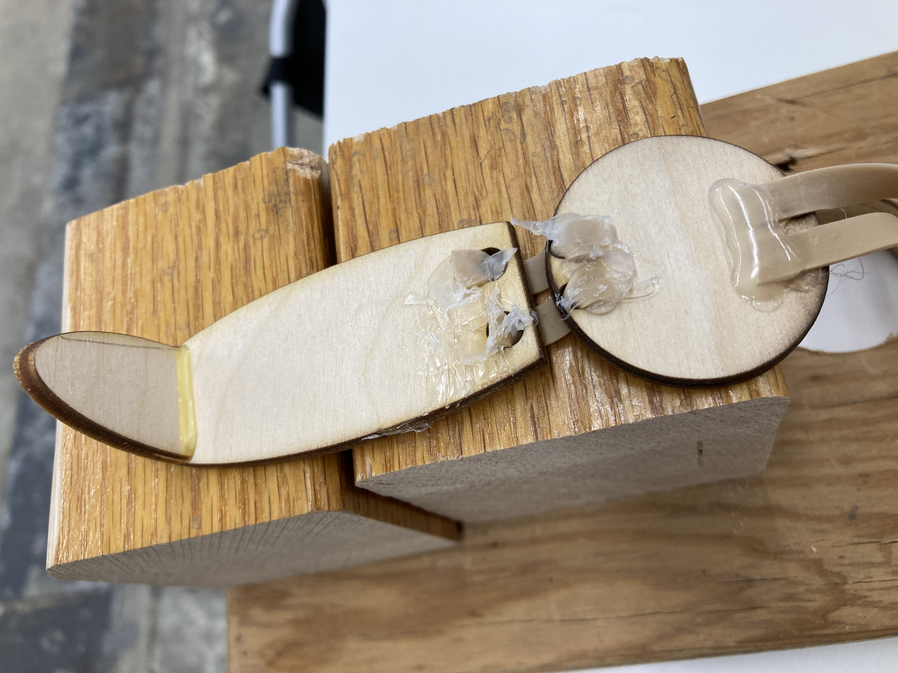
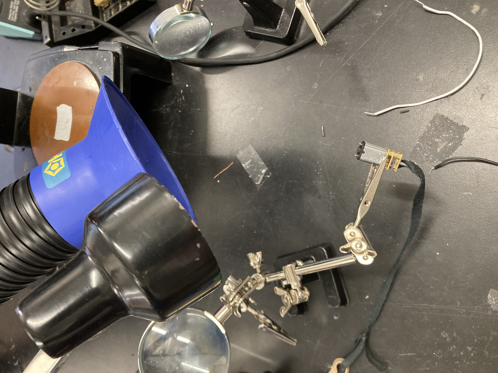
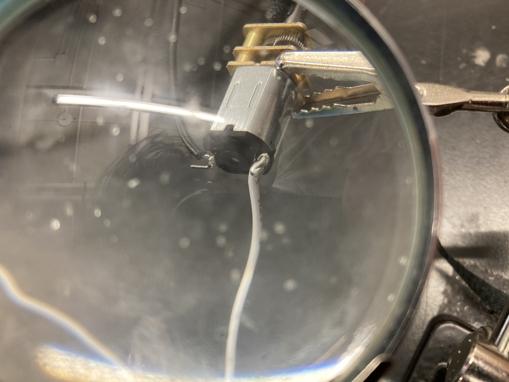

The two main topics this week were:
This week was quite a bit harder than the last one for me because I have never done any real work with circuits or electricity, but hopefully I'll improve on this with time!
One of my final project ideas involves building a project that will track knee motion and report the range of motion in order to help with physical therapy. In order to build towards this, I thought it could be helpful to build a model of a knee's motion that I could build upon in the future. Since right now I'm working on patellar tendon repair, I decided to model how the patellar tendon works. As illustrated in the gif below, when the quad muscle loosens, the patellar (knee cap) is allowed to slip downwards, which in turn relaxes the patellar tendon and tibia down, allowing the knee to bend. This process is reversed when the quad tightens, pulling the patellar back up and straightening the leg.
This model will differ from the actual human body in several key ways. First, I have no way at the moment to 3d print parts, which will mean some 3-dimensional parts will have to be a little flatter than normal. Second, I don't know how to simulate the tightening of a quad muscle, so I plan on simply pulling a rubber band with a string attached to a motor, as the pulling motion will tighten the rubber band and hopefully give the same approximate result. Below is a sketch of what I plan to use:
I began by cutting wooden blocks to form the knee itself. I used a hand saw to cut these as we didn't have a table saw as far as I could tell. I also used a sander to round out the edge a bit to make the bend smoother.
Then I used the laser cutter on some thin wood to create a circular patella with holes in it for attaching tendons, as well as a more elliptical shape to make a lower leg and foot. I attached the foot to leg using wood glue, and I wanted to just use knots to attach rubber bands to the holes, but those ended up rubbing up to much against the wood and preventing motion, so I eventually used hot glue, which improved motion but makes the project look much worse.
  Next, I screwed the "knee cap" onto a scrab slab of wood to anchor everything down. It was good to get to use the drill and screws to hold things together!
Then, I incorporated the motor by soldering wires to it. As you can see in the picture, the first wire attachment was essentially a giant glob of solder, but the second one got a little bit neater at least.
 Next, I glued the motor to the board, stuck the breadboard on, and added a potentiometer. Now it was starting to work!
The knee ends up extending!

And here's a final picture
We also had to use the multimeter to find the voltage of our circuit, and then use that to find the current.